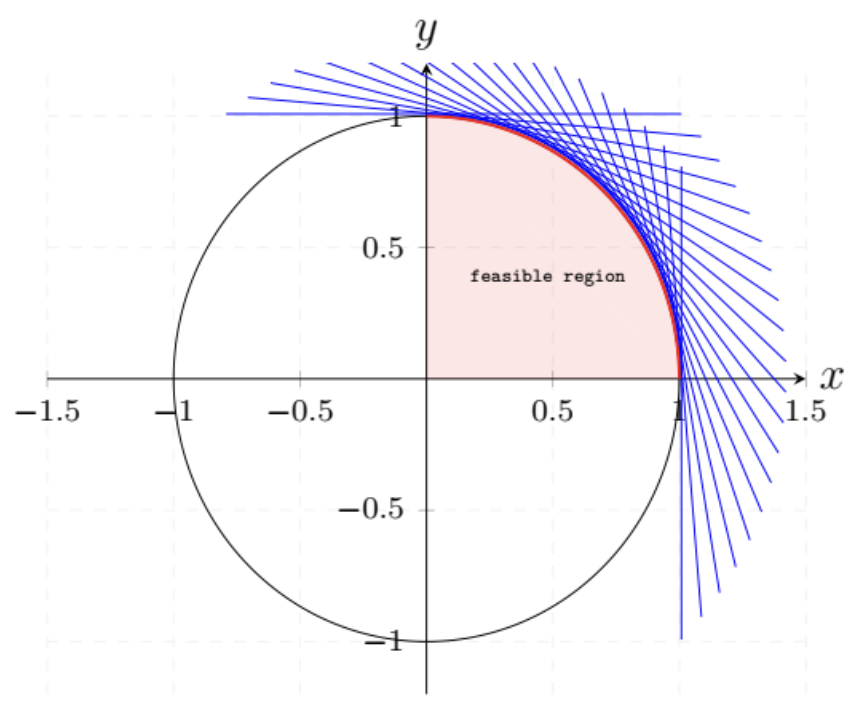

Chapter 2#
Exercise 2.1#
For each one of the following sets, determine whether it is a polyhedron.
(a) The set of all \((x, y)\in \mathcal{R}^2\) satisfying the constraints:
(b) The set of all \(x\in\mathcal{R}\) satisfying the constraint \(x^2 - 8x + 15 \leq 0\).
(c) The empty set.
Solution:
(a) The set equals \(\{ (x,y) | x \geq 0, y \geq 0, x^2 + y^2 \leq 1 \}\), which has the following image:

It is a set represented by infinite linear constraints, while a polyhedron is formed by finite linear constraints.
(b) The set is \(\{x\geq 3, x\leq 5\}\) and is a polyhedron.
(c) The empty set can be represented as \(\{x\geq 0, x< 0\}\) and is a polyhedron.
Note
A polyhedron is formed by finite linear constraints.
Exercise 2.2#
Let \(f:\mathcal{R}^n\rightarrow\mathcal{R}\) be a convex function and let \(c\) be some constant. Show that the set \(S = \{\bf{x} \in \mathcal{R}^n\mid f(\bf{x}) \leq c\}\) is convex.
Solution:
Assume two random element \(x_1\) and \(x_2\) in the set \(S\), therefore
For a parameter \(\theta\in [0, 1]\),
Thus,
Since \(f\) is a convex function,
And this leads to
Therefore, the set \(S\) is convex. \(\Box\)
Exercise 2.3#
(Basic feasible solutions in standard form polyhedra with upper bounds) Consider a polyhedron defined by the constraints \(\bf Ax = b\) and \(\bf 0\leq x\leq u\), and assume that the matrix \(\bf A\) has linearly independent rows. Provide a procedure analogous to the one in Section 2.3 for constructing basic solutions, and prove an analog of Theorem 2.4.
Solution:
The only difference of the above statement with Theorem 2.4 is that there are upper bounds for \(\bf x\). An analogous theorem is below:
Theoreom
For a polyhedron defined by the constraints \(\bf Ax = b\), \(\bf A\) has dimensions \(m\times n\), \(\bf 0\leq x\leq u\) and \(m\) independent rows. \(\bf x\) is a baisic solutions if and only if there exists indices \(B(1), B(2),\dots, B(m)\) such that:
(a) the columns \(\mathbf{A}_{B(1)},\dots, \mathbf{A}_{B(m)}\) are linear independent.
(b) if \(i\neq B(1),\dots, B(m)\), \(x_i=0\) or \(x_i=u_i\).
Proof.
Assume a solution \(x\) satsifying (a) and (b), and \(U\) is the set of indecies that \(x_i=u_i\), then
Because the columns \(\mathbf{A}_{B(1)},\dots, \mathbf{A}_{B(m)}\) are linear independent and \(x\) is a feasible solution, the above equations have a unique solution. And thus \(\bf Ax=b\) has a unique solution. From Theorem 2.2, the \(n\) active constraints are independent and thus \(\bf x\) is a basic solution.
For the converse, we assume that \(\bf x\) is a basic solution and we will show that conditions (a) and (b) are true. Since \(x\) is a basice solution, it is the solution of \(n\) linear independent constraints. Therefore, the \(n\) columns of \(\bf A\) and all the components in \(\bf x\) form the equations:
According to Theorem 2.2, the above equations has \(n\) linear independent column vectors and thus has a unique solution. Assume \(\bf x\) has \(k\) components that \(x_i\neq 0, x_i\neq u_i\). Equivalently, \(\sum_{i=1}^k x_i\mathbf{A}_{B(i)}=b-\sum_{i\in U}x_iA_{B(i)}\) has unique solution and therefore its columns \(\mathbf{A}_{B(1)},\dots, \mathbf{A}_{B(k)}\) are linear independent.
We have shown that there are \(k\) independent columns in \(\bf A\) and this implies \(k\leq m\). Since \(\bf A\) has \(m\) independent rows, it also has \(m\) independent columns. Now (a) is proved and we prove (b) next. If \(i\neq B(1), \dots, B(m)\), \(i\neq B(1), \dots B(k)\) and \(x_i=0\) or \(x_i=u_i\), (b) is also satisfied.
\(\Box\)
Note
Theorem: if equations \(Ax=b\) are consistent (has feasible solution), the columns of \(\bf A\) are linearly independent if and only if \(\bf Ax = b\) has a unique solution. (similar to Theorem 1.2)
For \(n\) decision variables, \(n\) independent row constraints results in a unique solution and also results in \(n\) independent column vectors
Exercise 2.4#
We know that every linear programming problem can be converted to an equivalent problem in standard form. We also know that nonempty polyhedra in standard form have at least one extreme point. We are then tempted to conclude that every nonempty polyhedron has at least one extreme point. Explain what is wrong with this argument.
Solution:
Assume a nonempty polydron is a hyperplane \({\bf a'x}=b\), for any point \(x_0\) in it, we can find other two points \(x_1\), \(x_2\) that satisfies \(x_0 = \lambda x_1+(1-\lambda)x_2\), so there can not be an extreme point in this polyhedron.
Note
A hyperplane is a polyhedron, but it does not has extreme points.
Exercise 2.5#
(ExtreIne points of isoInorphic polyhedra) A mapping \(f\) is called affine if it is of the form \(f(\bf x) = Ax + b\), where \(\bf A\) is a matrix and \(\bf b\) is a vector. Let \(P\) and \(Q\) be polyhedra in \(\mathcal{R}^n\) and \(\mathcal{R}^m\) , respectively. We say that \(P\) and \(Q\) are isomorphic if there exist affine mappings \(f: P\rightarrow Q\) and \(g: Q\rightarrow P\) such that \(g(f(\bf x) = x\) for all \(\mathbf{x} \in P\), and \(f(g(\bf y)) = y\) for all \(\mathbf{y} \in Q.\) (Intuitively, isomorphic polyhedra have the same shape.)
(a) If \(P\) and \(Q\) are isomorphic, show that there exists a one-to-one correspondence between their extreme points. In particular, if \(f\) and \(g\) are as above, show that \(\bf x\) is an extreme point of \(P\) if and only if \(f(\bf x)\) is an extreme point of \(Q\).
(b) (Introducing slack variables leads to an isoInorphic polyhedron) Let \(P = \{\mathbf{x} \in \mathcal{R}^n \mid \bf Ax \geq b, x\geq 0\}\), where \(\bf A\) is a matrix of dimensions \(k\times n\). Let \(Q = \{\bf (x, z) \in \mathcal{R}^{n+k} \mid Ax - z = b, x \geq 0, z \geq 0\}\). Show that \(P\) and \(Q\) are isomorphic.
Solution:
(a) We first prove：if \(\bf x\) is the extreme point of \(P\), then it is also the extreme point of \(Q\).
According to the definition of extreme point and Theorem 2.3 in the book, \(\bf x\) is also a vertex of \(P\), then: there exists a vector \(\bf c\) such that \(\bf c'x<c'y\) for all \(\bf y\) satisfying \(\bf y\in P\) and \(\bf y\neq x\).
Since \(g(f(\bf x))=\bf x\),
Since \(g\) is an affine function, we assume \(g(\bf x)=Dx+d\), then
\(\bf Ax+b\), \(\bf Ay+b\) are the points in \(Q\). \(\bf c'D\) is a vector and \(\bf Ax+b \neq Ay+b\). By the definition of vertex, \(\bf Ax+b\) is the vertex of \(Q\). Thus it is also an extreme point of \(Q\).
In a similar way, we can prove: if \(\bf x\) is the extreme point of \(Q\), then it is also the extreme point of \(P\)。\(\Box\)
(b) By obtaining the formulas of \(f\) and \(g\), we can prove \(P\) and \(Q\) are isomorphic.
The formulas of \(f\) and \(g\) are below:
Exercise 2.6#
(Carath\(\acute{\bf e}\)odory’s theorem) Let \(\bf A_1,\dots,A_n\) be a collection of vectors in \(\mathcal{R}^m\).
(a) Let
Show that any element of \(C\) can be expressed in the form \(\sum_{i=1}^n \lambda_i\mathbf{A}_i\), with \(\lambda_i\geq 0\), and with at most \(m\) of the coefficients \(\lambda_i\) being nonzero. Hint: Consider the polyhedron
(b) Let \(P\) be the convex hull of the vectors \(\mathbf{A}_i\):
Show that any element \(P\) can be expressed in the form \(\sum_{i=1}^n \lambda_i\mathbf{A}_i\), where \(\sum_{i=1}^n \lambda_i=1\) and \(\lambda_i\geq 0\) for all \(i\), with at most \(m+1\) of the coefficients \(\lambda_i\) being 0.
Solution:
(a)Let \( y \) be a point in \( C \). The polyhedron
is a standard form polyhedron and is non-empty (because \(y\) is a point in it). According to Corollary 2.2 in the textbook, a non-empty standard form polyhedron must have a basic feasible solution. According to Theorem 2.4, in a basic solution, the values of the non-basic variables (a total of \(n - m\)) are zero. Therefore, among \(\lambda_1, \dots, \lambda_n\), at most \(m\) can be non-zero.
(b) Let \(y\) be a point in \(P\). Transform \(P\) into standard form:
Since it is a non-empty standard form polyhedron, there exists a basic feasible solution. According to Theorem 2.4, the values of the non-basic variables (a total of \( n - m - 1 \)) are zero. Therefore, among \( \lambda_1, \dots, \lambda_n \), at most \( m + 1 \) can be non-zero.
Comment: This problem mainly examines the property that a non-empty standard form polyhedron must have a basic feasible solution (the form of a standard form polyhedron is \( \{ \mathbf{Ax = b, x \geq 0} \} \)).
Note
The geometric significance of Carathéodory’s theorem is that any point in an \( m \)-dimensional convex hull can be represented by a convex combination of at most \( m + 1 \) points from the convex hull.
Exercise 2.7#
Suppose that \(\{\mathbf{x}\in \mathcal{R}^n\mid \mathbf{a'_ix\geq b_i, i=1,\dots,m}\}\) and \(\{\mathbf{x}\in \mathcal{R}^n\mid \mathbf{g'_ix\geq h_i, i=1,\dots,k}\}\) are two representations of the same nonempty polyhedron. Suppose that the vectors \(\mathbf{a_1,\dots, a_m}\) span \(\mathcal{R}^n\). Show that the same must be true for the vectors \(\mathbf{g_1,\dots, g_k}\).
Solution:
Let the polyhedron be \(P\). Suppose that \(\mathbf{g}_1, \dots, \mathbf{g}_k\) cannot generate \(\mathcal{R}^n\). Then there exists a vector \(\mathbf{d}\) in \(\mathcal{R}^n\) that is orthogonal to all of \(\mathbf{g}_1, \dots, \mathbf{g}_k\). For any point \(\mathbf{x}_0\) that satisfies \(\{\mathbf{x} \in \mathcal{R}^n \mid \mathbf{g}_i' \mathbf{x} \geq h_i, i = 1, \dots, k\}\), \(\mathbf{x}_0 + \mathbf{d}\) is also inside \(P\), meaning that \(P\) contains a line. However, since \(\mathbf{a}_1, \dots, \mathbf{a}_m\) can generate \(\mathcal{R}^n\), there are \(n\) linearly independent vectors among \(\mathbf{a}_1, \dots, \mathbf{a}_m\). According to Theorem 2.6, \(P\) cannot contain a line, which is a contradiction. Therefore, \(\mathbf{g}_1, \dots, \mathbf{g}_k\) must also generate \(\mathcal{R}^n\).
Exercise 2.8#
Consider the standard form polyhedron \(\{\mathbf{x} \mid \mathbf{Ax = b}, \mathbf{x} \geq 0\}\), and assume that the rows of the matrix \(\mathbf{A}\) are linearly independent. Let \(\mathbf{x}\) be a basic solution, and let \(J = \{i \mid x_i \neq 0\}\). Show that a basis is associated with the basic solution \(\mathbf{x}\) if and only if every column \(\mathbf{A}_i, i \in J\), is in the basis.
Solution:
Proof. (1) First, we prove that if each column vector \(\mathbf{A}_i, i \in \mathbf{J}\) is in the basis, then these column vectors correspond to a basic solution \(\mathbf{x}\).
Let \(\mathbf{B}=[\mathbf{A_{B(1)}, \dots, A_{B(m)}}]\) be the basis. Since each column vector \(\mathbf{A}_i, i \in \mathbf{J}\) is in the basis \(\mathbf{B}\), they are linearly independent. Also since \(\mathbf{A}\) is full row ranked, any \(m\) columns of \(\mathbf{A}\) is independent (fullfill Theorem 2.4 a). According to the problem statement, if \(j \notin \mathbf{J}\), then \(x_j = 0\) (fullfill Theorem 2.4 b). According to Theorem 2.4 in the textbook, \(\mathbf{x}\) is a basic solution.
(2) Next, we prove that if the column vectors \(\mathbf{A}_i, i \in \mathbf{J}\) correspond to a basic solution \(\mathbf{x}\), then they are in the basis.
According to Theorem 2.4, if \(i\neq \mathbf{B}(1),\dots, \mathbf{B}_m\), \(x_i=0\). According to the definition of \(\mathbf{J}\), \(\mathbf{J}\subset \{\mathbf{B}(1),\dots, \mathbf{B}_m\}\), so column vectors \(\mathbf{A}_i, i \in \mathbf{J}\) is in the basis.
\(\Box\)
Exercise 2.9#
Consider the standard form polyhedron \(\{\mathbf {x \mid Ax = b, x \geq 0}\}\), and assume that the rows of the matrix \(\mathbf{A}\) are linearly independent.
(a) Suppose that two different bases lead to the same basic solution. Show that the basic solution is degenerate.
(b) Consider a degenerate basic solution. Is it true that it corresponds to two or more distinct bases? Prove or give a counterexample.
(c) Suppose that a basic solution is degenerate. Is it true that there exists an adjacent basic solution which is degenerate? Prove or give a counterexample.
Solution:
(a) Consider a matrix \(\mathbf{A}\) with \(m\) rows and \(n\) columns, and two bases \(\mathbf{B}_1\) and \(\mathbf{B}_2\). Assume that both basic solutions are non-degenerate, meaning that all \(m\) variables in the basic solution corresponding to basis \(\mathbf{B}_1\) are non-zero, and all \(m\) variables in the basic solution corresponding to basis \(\mathbf{B}_2\) are also non-zero. Since the two bases are different, there is at least one variable that is in \(\mathbf{B}_1\) but not in \(\mathbf{B}_2\), which leads to \(m+1\) non-zero variables in the solution \(\mathbf{x}\). This contradicts the fact that \(\mathbf{x}\) is a basic solution. Therefore, the basic solution \(\mathbf{x}\) must be degenerate.
(b) No. The simple counter example is \(\{x=0, x\geq 0\}\). The degenerate basic solution is \(x=0\), but it corresponds to only one base.
(c) NO. An counter example:
Base \(\{\mathbf A_1,\mathbf A_2\}\) and\(\{\mathbf A_2,\mathbf A_3\}\) all corresponds to a degenerate solution \([0, 1, 0]\). But the solution \([1, 0, 1]\) of their adjacent bas \(\{\mathbf A_1,\mathbf A_3\}\) is not degenerate.
Exercise 2.10#
Consider the standard form polyhedron \(P = \{\bf x \mid Ax = b, x \geq 0\}\). Suppose that the matrix \(\bf A\) has dimensions \(m \times n\) and that its rows are linearly independent. For each one of the following statements, state whether it is true or false. If true, provide a proof, else, provide a counterexample.
(a) If \(n = m + 1\), then \(P\) has at most two basic feasible solutions.
(b) The set of all optimal solutions is bounded.
(e) At every optimal solution, no more than \(m\) variables can be positive.
(d) If there is more than one optimal solution, then there are uncountably many optimal solutions.
(e) If there are several optimal solutions, then there exist at least two basic feasible solutions that are optimal.
(f) Consider the problem of minimizing \(\max\{\bf c'x, d'x\}\) over the set \(P\). If this problem has an optimal solution, it must have an optimal solution which is an extreme point of \(P\).
Solution:
(a) Right. The key is to prove that \(P\) is one-dimensional。
Proof.
Since the rows in \(\bf A\) are linear independent, rank(\(\bf A\)) \(=m\). Accodering to the knowledge in linear algebra,
Therefore, the dimensiion of the null space of \(\bf A\) is 1, i.e., the solution space of equations \(\bf Ax=0\) is 1. Accordering to linear algebra, the dimension of the solutio space is \(\bf Ax=b\) is equal to that in \(\bf Ax=0\) (becaause the general solution of \(\bf Ax=b\) equals to any feasible solution plus the solution of 的 \(\bf Ax=0\)).
Since the solution of \(P\) is the subset of the solutions in \(\bf Ax=b\), \(P\) is the subset of a line, i.e., \(P\) is a line segemen, point or empty space, all of which has at most two vertices. So, there are at most 2 basice feasible solutions for \(P\).
\(\Box\)
(b) Wrong. A counter example：
When \(x_2=0\) and \(x_1\) be any real number, it can be an optimal solution. So the set of optimal solutions is not bounded.
(c) Wrong. If the coefficients \(\bf c\) in the objective function are \(\bf 0\), any feasible solution are optimal and there can be more than \(m\) variables that are positive.
(d) Right. It is easy to verify the points on the line segment of two optimal soulutions are also optimal.
(e) Wrong. A counter example:
(0, 1) and (0, 2) are both optimal solutions, but there is only one basic feasible solution (0, 0).
(f) wrong. A counter example:
The objective of the above problem equals \(|x_1-1|\). The unique optimal solution is (1, 1), which is not an extreme point.
Note
For this nonlinear objetive function in a polyhron, the optimal solution may not be the extrem point.
The solution of \(n\) linear independent active constraints is basic solution (\(n\) is the number of variables).
Exercise 2.11#
Let \(P ={x \in \mathcal{R}^n \mid \mathbf{Ax\geq b}}\). Suppose that at a particular basic feasible solution, there are \(k\) active constraints, with \(k > n\). Is it true that there exist exactly \(k\choose n\) bases that lead to this basic feasible solution? Here \({k\choose k} = k! / (n! (k - n) !)\) is the number of ways that we can choose \(n\) out of \(k\) given items.
Solution:
No.There may be dependent constrains in the \(k\) active constraints. We can find a counter example:
In this example, \(k=2\), \(n=1\). However, there is only 1 base that leads to the basic feasible solution.